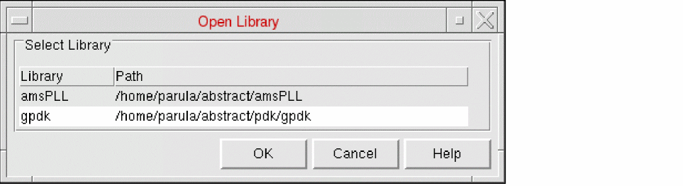

Opening a Library in Abstract Generator
The Open Library window lists the libraries and their associated paths that are currently registered in Abstract Generator. These are read in from the cds.lib file located in the run directory and are listed in an alphabetical order. The cds.lib file defines the libraries that tools read to identify the libraries they can use. The file maps user library names to physical directory paths. Usually, one cds.lib file, which might reference other cds.lib files, determines the libraries that are available to your design tool.
-
You can specify the library you want to process in Abstract Generator by selecting File – Library – Open or by clicking the Library button in the toolbar.
If there is only one library registered, clicking the Library button on the toolbar automatically opens that library for the current session.The File – Library – Open menu option is grayed out if there are no libraries listed in thecds.libfile. - Select the library you want to open and click OK.
All the views created by Abstract Generator, including the final abstracts, are stored in this library. The option settings from a previous Abstract Generator session are stored in your current working directory in a .abstract.options file. When you reopen the library, Abstract Generator reads in this and restores the bin options to the settings that existed when the library was last saved.
Related Topics
Return to top